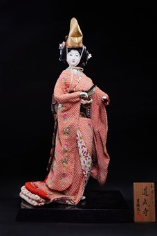

Doujouji (Đền Doujouji) là chủ đề được lấy cảm hứng từ Musume Doujouji (娘道成寺) – một trong những vở múa nổi tiếng và được biểu diễn nhiều nhất trong nghệ thuật Kabuki và Nihon Buyou. Câu chuyện dựa trên truyền thuyết ngôi chùa Doujouji ở tỉnh Wakayama, kể về mối tình bi thương và sự hóa thân của người con gái Kiyohime, sau này được chuyển thể thành nhiều loại hình nghệ thuật truyền thống Nhật Bản.
Búp bê tái hiện hình ảnh Hanako, nữ vũ công Shirabyoushi, trong cảnh biểu diễn tại lễ khánh thành chiếc chuông mới của chùa Doujouji. Bộ kimono nhiều lớp rực rỡ cùng chiếc mũ eboshi đặc trưng của Shirabyoushi thể hiện vẻ đẹp trang nghiêm nhưng vẫn mềm mại, duyên dáng của nhân vật trên sân khấu.
Từng đường nét trên gương mặt, tư thế chuyển động và hoa văn trên trang phục đều được chế tác thủ công công phu, phản ánh kỹ thuật tinh xảo của nghệ nhân Nhật Bản. Không chỉ là một tác phẩm mỹ nghệ, búp bê Doujouji còn là biểu tượng của sự kết hợp giữa văn học, sân khấu, âm nhạc và nghệ thuật chế tác búp bê truyền thống, góp phần lưu giữ một trong những di sản văn hóa đặc sắc của Nhật Bản.
道成寺は、歌舞伎や日本舞踊で最も有名で、最も多く上演されている演目のひとつ『娘道成寺』から着想を得た題材です。物語は和歌山県の道成寺に伝わる伝説をもとにしており、清姫という娘の悲恋と変化（へんげ）を描いたもので、のちにさまざまな日本の伝統芸能に翻案されました。
この人形は、道成寺の新しい鐘の供養の場で舞う白拍子の踊り手・花子の姿を表しています。華やかに重ねた着物と、白拍子特有の烏帽子が、舞台上の人物の厳かでありながら柔らかく優美な美しさを表現しています。
顔の表情、動きのある姿勢、衣装の文様の一つひとつが手間をかけて手作りされており、日本の職人の精巧な技を示しています。道成寺の人形は美術工芸品であるだけでなく、文学・演劇・音楽・伝統人形制作が融合したものの象徴であり、日本の優れた文化遺産のひとつを今に伝えています。